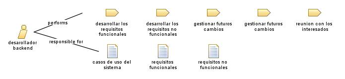

Role: desarollador backend
Relationships

Primary Performs
desarrollar los requisitos funcionales
desarrollar los requisitos no funcionales
gestionar futuros cambios
gestionar futuros cambios
reunion con los interesados
Additionally Performs
analisis de documentos
priorizacion de requisitos
Modifies
casos de uso del sistema
requisitos funcionales
requisitos no funcionales